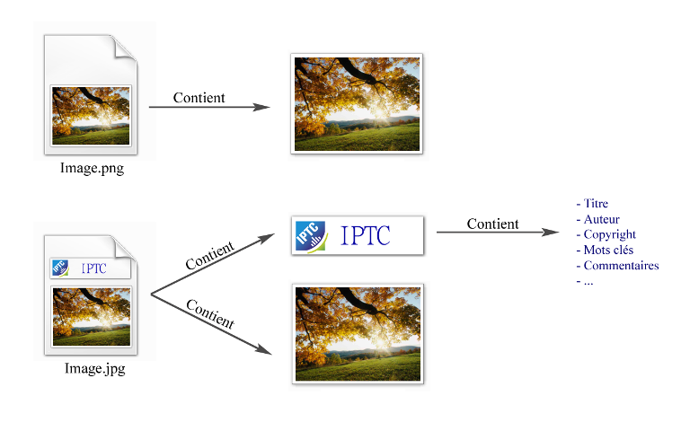

Vous avez besoin de manipuler les métadonnées contenues dans vos images .jpeg mais vous ne savez pas comment faire ? C'est ici que ça se passe. Vous ne savez pas ce que c'est et vous êtes curieux ? C'est aussi ici que ça se passe. Les informations claires et simples sur les IPTC ne courent pas les moteurs de recherche. C'est pourquoi je vais essayer de vous faire part de mon expérience.
Dans ce tutoriel nous verrons brièvement ce que sont les métadonnées IPTC associées aux images aux formats .jpeg .jpg ou encore .tiff ainsi que leurs rôles. Nous verrons ensuite comment lire puis écrire les métadonnées IPTC avec PHP.
C'est assez facile de lire les métadonnées et nous n'écrirons donc que peu de code dans la première partie. L'important étant de ne pas tomber dans tous les pièges qui nous séparent des données. :pirate: La partie sur l'écriture des métadonnées sera cependant un petit peu plus compliquée.
IPTC veut dire "International Press Telecommunications Council". Ma science n'étant pas infuse c'est Wikipédia qui va vous parler de ce consortium :
Citation : Wikipedia
L'International Press Telecommunications Council (abrégé en IPTC), basé à Windsor au Royaume-Uni, est un consortium réunissant les principales agences de presses du monde. Sa tâche consiste à développer et maintenir des standards techniques destinés à faciliter l'échange des données dans ce domaine. Les standards de l'IPTC sont employés par la quasi totalité des grandes agences de presse du monde.
Les présentations étant faites on va pouvoir passer aux choses sérieuses.
L'IPTC définit un standard pour stocker des informations relatives à une image. Ces informations sont variées et peuvent être le nom de l'image, le titre de l'image, des mots-clés associés à l'image, l'auteur de l'image, le copyright, et j'en passe... Elles permettent de décrire l'image. Ces données IPTC, que l'on appellera les ITPC, font partie du fichier. Elles sont dans l'image d'où leur intérêt. En effet, le fait qu'elles soient associées à l'image et non à une base de données externe à l'image permet de manipuler l'image comme bon vous semble, sans perdre ces informations.

Les fichiers .jpg comportent en plus des données relatives à l'image.
Sous Windows : clic droit sur une image .jpg→ propriétés → onglet détail. Vous verrez certaines des données que contient votre image. Certaines sont des IPTC, d'autres des EXIF, d'autres ne sont ni l'un ni l'autre. Nous verrons qui correspond à quoi plus tard. ;)
À quoi ça sert ?
On peut utiliser les données IPTC pour classer les photos par exemple. On peut facilement faire une recherche d'image grâce aux tags IPTC. Dans notre cas, puisque nous allons voir comment travailler avec les métadonnées en PHP, elles pourront par exemple servir de référence pour votre base de données. Vous créez un site pour présenter vos photos ? Dans ce cas, il va falloir gérer toutes les données de vos photos pour pouvoir les afficher. Les métadonnées vont vous faciliter la tache.
Avant d'apprendre à écrire, on va apprendre à lire. Et pour lire, il faut qu'il y ait quelque chose d'écrit. Et comme on ne sait pas écrire en PHP, on va remplir les champs IPTC avec notre ordinateur.
Sous Windows vous remarquerez que vous pouvez directement remplir les champs IPTC à la main. Ne le faites pas ! En effet, sous Windows ça capote un peu et si vous les rentrez à la main :
soit PHP ne pourra pas les lire ;
soit il y arrivera quand même mais il considèrera les champs avec des caractères spéciaux comme vides et ça c'est ballot quand on sait que "éèê" font planter le système.
Sous Mac, sous Linux, sous XP ou Seven peut-être que ça marche bien (je n'en sais rien) mais sous Vista ça ne marche pas, c'est pourquoi je vous conseille d'utiliser un logiciel pour ça. Mieux vaut prévenir que guérir.
Tu devais nous dire quels étaient les champs IPTC !
Je vous donne une liste de ceux que nous allons utiliser dans ce tutoriel. Certains me semblent intéressants d'autres franchement inutiles, je ne les évoquerai donc pas. Une liste exhaustive sera présente à la fin du tutoriel.
Le titre.
Les mots-clés.
Le commentaire.
L'auteur.
Le copyright.
Il en existe plein d'autres, vous pourrez vous amuser à les remplir si vous les trouvez intéressants avec le logiciel que je vais vous présenter. Dans le tutoriel on travaillera sur ceux-là.
Vous pourrez remplir ces champs avec le logiciel XnWiew (pour Windows). Les mac users et linuxiens je vous invite à chercher sur google car je ne connais pas de logiciel pour vous. Le tutoriel portant sur le PHP je vous laisse utiliser tout seul ce logiciel très intuitif pour remplir les champs IPTC présentés ci-dessus d'une images test.jpg. Il suffit d'ouvrir une image puis Édition → métadonnées → éditer les informations IPTC.
Lire les métadonnés IPTC
Maintenant qu'on a passé les pièges des accents et des champs faussement vides on peut y aller. :pirate: C'est franchement très simple. Dotons-nous d'une image test.jpg avec les 5 champs dont je vous ai parlé remplis.
<?php
GetImageSize ("imagetest.jpg",$info);
?>
On récupère les informations contenues dans l'image avec la fonction GetImageSize qui prend comme paramètre optionnel $info. Dans cette variable seront stockés entre autres les champs IPTC non vides. En fait, dans $info seront stockés le marker APP13 défini par Adobe Photoshop et l'IPTC pour un fichier JPEG, mais aussi d'autres markers. Mais bon, on s'en fiche.
Récupérons donc le marker qui nous intéresse. C'est le markerAPP13.
<?php
$iptc = iptcparse ($info["APP13"]);
?>
iptcparse retourne un tableau associatif avec les "codes" associés aux champs IPTC comme index et le contenu du champ dans les valeurs de tableau correspondantes. Si aucune balise IPTC n'a été trouvée, cette fonction retourne FALSE.
Si vous faites un <?php print_r($iptc) ?> voilà ce que vous allez avoir à peu près :
Exemple : à l'index [2#120] nous avons un tableau qui contient à l'index 0 le commentaire de l'image. Pour récupérer le commentaire il suffit donc de faire :
<?php
$commentaire = $iptc['2#120'][0];
?>
Pour les autres c'est la même chose :
[2#025] contient les mots-clés ;
[2#105] contient le titre ;
[2#080] contient l'auteur ;
[2#116] contient le copyright.
En théorie ce code suffit à récupérer le commentaire :
Néanmoins c'est mal car si les IPTC ne sont pas renseignés, ou si le champ commentaire (2#120) n'est pas rempli, vous aurez droit à une erreur. Je vous conseille donc plutôt ceci qui gère les erreurs.
On notera l'utilisation d'opérateurs ternaires qui permettent de condenser fortement l'écriture des conditions. Pour plus d'informations sur les opérateurs ternaires. Si les opérateurs ternaires vous rebutent vous pouvez faire ça avec des if et des else mais ça sera beaucoup plus lourd à écrire.
Sur ce, nous en avons fini avec la lecture des IPTC. Passons à l'écriture ! :pirate:
Écrire et modifier les données IPTC d'une image n'est pas aussi facile que de les lire. Nous allons utiliser une fonction assez difficile à manipuler : la fonction iptcembed. Elle permet d'intégrer des données binaires IPTC dans une image JPEG.
Commençons par indiquer le chemin vers une image. <?php $chemin_image="dossier-images/image.jpg"; ?> . Ceci étant fait nous pouvons passer aux choses sérieuses.
Il faut commencer par créer un tableau associatif qui associe au code de l'IPTC la valeur de l'IPTC.
Le but du jeu est alors de transformer ce tableau en quelque chose de compréhensible pour la fonction iptcembed. Regardons la documentation de cette fonction.
mixediptcembed ( string$iptcdata,string$jpeg_file_name [,int$spool ] ) La fonction prend deux paramètres plus un facultatif dont on se passera.
$jpeg_file_name de type chaîne de caractères qui est le chemin vers l'image à modifier, mais ça je pense que vous l'aviez deviné tout seul.
$iptcdata de type chaîne de caractères aussi mais qui est un peu particulier et qui requiert une attention particulière. Si j'ai dit que iptcembed est une fonction difficile à manipuler c'est à cause de ce paramètre.
L'idée est de transformer le tableau $iptc en une chaîne de caractères compréhensible par iptcembed.
On initialise $iptcdata pour la concaténation de la ligne 6 (sinon on concatène dans le vide à la première itération et ça plante).
On parcourt tout le tableau $iptc qu'on a défini tout à l'heure.
On supprime le 2# du code qui ne sert à rien pour la suite
On concatène $iptcdata avec une chaîne de caractères retournée par la fonction transformer_iptc et qui permet de convertir une valeur IPTC (code + valeur) en chaîne iptcData.
N.B. : on aurait pu aussi définir $iptc comme ceci : <?php $iptc = array('005' => 'titre', '120' => 'Commentaire', '122' => 'Auteur'); ?> et se passer de <?php $tag = substr($tag, 2); ?> .
La fonction transformer_iptc est... spéciale. Et je ne vous l'expliquerai pas car j'en suis bien incapable. En gros, elle prend en paramètre un code iptc (ex : 105) et la valeur qui lui est associée et renvoie une chaîne de caractères qui contient les deux informations données sous une forme pas très lisible par un humain. ^^
Je ne peux hélas pas vous en dire plus, mais si quelqu'un veut me faire part de ses connaissances, je serai ravi de compléter ce passage.
Conclusion : voilà la fonction et ne cherchez pas à la comprendre car ça fait mal à la tête. >_
En effet, iptcembed n'écrit rien, elle renvoie une chaîne de caractères. La doc nous dit ceci :
Citation : Documentation PHP
En cas de succès [...] le fichier JPEG sera retourné sous la forme d'une chaîne de caractères.
Du coup il faut écrire soit-même le fichier. Pour ce faire on va :
Ouvrir le fichier image en mode wb c'est-à-dire qu'on veut réécrire entièrement le fichier.
Écrire le fichier image en mode binaire. On écrira la chaîne de caractères retournée par iptcembed.
<?php
$fichier = fopen($chemin_image, "wb"); # Ouverture du fichier
fwrite($fichier, $donnees); # Écriture du fichier
fclose($fichier); # Fermeture du fichier
?>
Et voilà le travail ! Vous avez enregistré des IPTC dans une image. Mais je n'ai pas fini. Si vous utilisez ce code vous allez avoir quelques déceptions.
Conserver les données
Prenons une image dont les IPTC sont :
Titre > Coucher de soleil ;
Auteur > Aravis ;
Commentaire > Photo prise en haut du mont Blanc.
Mais vous vous dites : "Hé mais c'est pas Aravis qui a pris la photo, c'est moi !". Qu'importe, vous faites la modification :
Le drame c'est que maintenant les champs titre et commentaire ont été effacés. Seul le champ auteur est rempli. En fait, lorsqu'on écrit les IPTC, on efface toutes les données et on en écrit d'autres par dessus. Si on ne veut pas perdre celles qui étaient avant, il faut les retenir et les réécrire.
<?php
GetImageSize ($f, $info);
if (isset ($info["APP13"]))
{
$iptc = iptcparse ($info["APP13"]);
# On transforme la "matrice" en tableau simple
foreach ($iptc as $tag => $valeur)
$iptc[$tag] = $valeur[0];
}
$iptc['2#122'] = 'Moi';
# Script d'écriture des iptc
Si on exécute ce code : Ligne 5 : $iptc est sous la forme "matrice". $iptc = Array ( [2#105] => Array ( [0] => Coucher de soleil ) [2#120] => Array ( [0] => Photo prise en haut du mont Blanc ) [2#122] => Array ( [0] => Aravis ) ) . Ligne 9 (à la fin du foreach) : $iptc est sous la forme tableau simple. $iptc = Array ( [2#105] => Coucher de soleil [2#120] => Photo prise en haut du mont Blanc [2#122] => Aravis ). Ligne 10 : on a modifié l'auteur. $iptc = Array ( [2#105] => Coucher de soleil [2#120] => Photo prise en haut du mont Blanc [2#122] => Moi ).
On peut alors écrire les IPTC sans perdre de données. :magicien:
Le problème des mots-clés
Vous vous rappelez que je vous ai dit que les mots-clés pouvaient se présenter sous forme d'un tableau à plusieurs cases ? Array ([2#025] => Array ( [0] => Mot clé 1 [1] => Mot clé 2 [2] => Mot clé 3 ))
Le problème c'est qu'avec des chaînes de caractères on ne pourra jamais refaire un tableau. On ne pourra pas dire dans une chaîne de caractères que Mot-clé 1 est le premier mot clé, Mot-clé 2 le deuxième, etc.
Quand on écrira des IPTC au mieux nous pourrons faire ceci :
<?php
$iptc['2#025'] = 'Mot clé 1, Mot clé 2, Mot clé 3';
?>
Cette chaîne de caractères sera interprétée comme un seul mot-clé. Si vous récupérez plus tard cette donnée il faudra passer par la fonction explode pour dissocier les mots-clés. Il est à ma connaissance impossible d'enregistrer un tableau en php. Mais les informations sur le traitement des IPTC avec PHP manquent cruellement sur le net. Si jamais vous trouvez la solution vous savez où me trouver. ;)
Ici s'achève l'écriture et la modification des IPTC en PHP.
Voici une liste exhaustive des champs IPTC existants. Si vous ne voyez pas le but de chacun des champs, c'est normal, moi non plus. Je vous les donne car ça serait mal venu de faire un tuto sur les IPTC sans en donner la liste. Mais personnellement, je n'en vois pas l'utilité. ^^
Code
Nom
Propriétés
Nombre de caractères
2#122
Auteur
2#120
Légende / résumé
2000
2#118
Contact
tableau à plusieurs cases
2#116
Copyright
128
2#115
Source
32
2#110
Crédit
32
2#105
Titre
256
2#103
Référence à la transmission
2#101
Pays
64
2#100
Code du pays
3
2#095
Province / état
32
2#092
Région
2#090
Ville
32
2#085
Titre du créateur
2#080
Créateur
64
2#075
Cycle de l'objet
3 valeurs possibles : a = matin, b = après midi, c = soir
1
2#070
Version du programme
2#065
Programme
15
2#060
Heure de création
HHMMSS
2#055
Date de création
16
2#040
Instruction spéciale
256
2#035
Heure de sortie / disponibilité
HHMMSS
2#030
Date de sortie / disponibilité
16
2#026
Location
2#025
Mots clés
tableau à plusieurs cases
64 par mots clé
2#022
Identifiant
2#020
Catégorie supplémentaire
tableau à plusieurs cases
2#015
Catégorie
3
2#010
Priorité
valeurs de 0 à 8 : 0 aucun, 1 = haut, 8 = faible
1
2#007
Statut éditorial
2#005
Nom de l'objet
64
Eh bien voilà, ce tuto touche à sa fin. Vous savez maintenant faire plein de choses avec les métadonnées IPTC de vos images jpg, jpeg et tiff. Pour information, les images ne contiennent pas que les IPTC. Les images contiennent aussi des métadonnées EXIF et des métadonnées XMP. Si cela vous intéresse grunk a écrit un tutoriel sur les données EXIF : [Exif] Lire les infos d'une image.